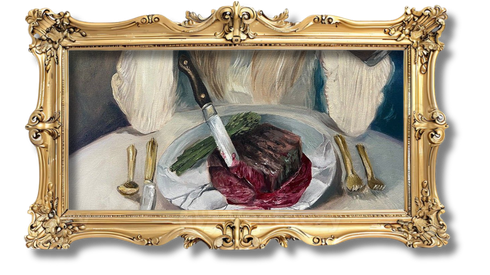

[152] One of my favourite stories is about an old woman and her husband – a man mean as Mondays, who scared her with the violence of his temper and the shifting nature of his whims. She was only able to keep him satisfied with her unparalleled cooking, to which he was a complete captive. One day, he bought her a fat liver to cook for him, and she did, using herbs and broth. But the smell of her own artistry overtook her, and a few nibbles became a few bites, and soon the liver was gone. She had no money with which to purchase a second one, and she was terrified of her husband’s reaction should he discover that his meal was gone. So she crept to the church next door, where a woman had been recently laid to rest. She approached the shrouded figure, then cut into it with a pair of kitchen shears and stole the liver from her corpse.
[153] That night, the woman’s husband dabbed his lips with a napkin and declared the meal the finest he’d ever eaten. When they went to sleep, the old woman heard the front door open, and a thin wail wafted through the rooms. “Who has my liver? Whooooo has my liver?”
[154] The old woman could hear the voice coming closer and closer to the bedroom. There was a hush as the door swung open. The dead woman posed her query again.
[155] The old woman flung the blanket off her husband.
[156] “He has it!” She declared triumphantly.
[157] Then she saw the face of the dead woman, and recognized her own mouth and eyes. She looked down at her abdomen, remembering, now, how she carved into her own belly. Next to her, as the blood seeped into the very heart of the mattress, her husband slumbered on.
[158] That may not be the version of the story you’re familiar with. But I assure you, it’s the one you need to know.
The woman depicted in this narrative parallels the protagonist in her unwavering domestic devotion. Both figures would do anything to please their husbands, no matter how much their husbands actually disdain them. They viewed self-destruction as a sacrifice—their ultimate act of love. Through this sacrifice, the woman internalizes the patriarchal requirement that her identity must be entirely consumed for the survival of their marriage. This total devotion represents the final stage of dispossession where the woman no longer needs to be forced into submission because she has been conditioned to volunteer her own erasure as an act of "love."